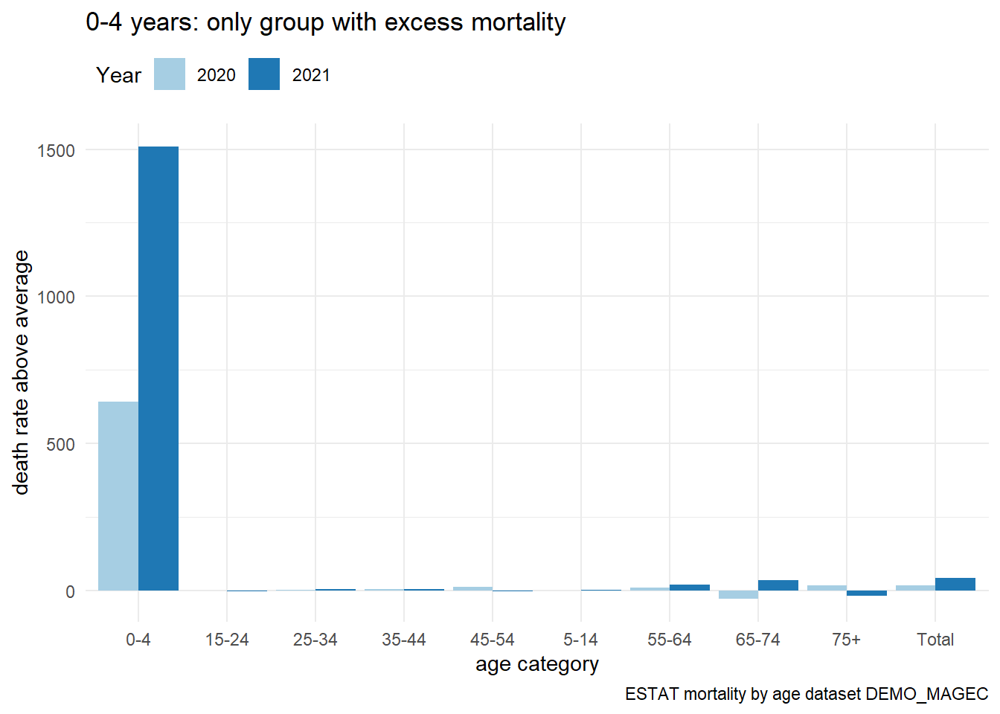
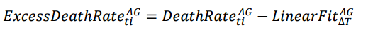

The baseline level is the 2019 numbers for each age group. Adjust mortality rates relative to 2019 baseline.
Gives the percent change in death rate relative to 2019 baseline.
Code
# Set the base rate from year 2019 valuesbase <- irl_dt[year==2019, rate]# Create a baseline vector for the three years 2020 - 2022base <-rep(base, 3)# Calculate percent change relative to death rate for 2019irl_dt[year %in%2020:2022, xs_base :=round(rate/base -1, 5)]irl_dt[year %in%2020:2023,] |>head() |>gt()
# Calculate difference between yearly death rate and # death rate for 2019 irl_dt[year %in%2020:2022, xs_diff :=round(rate - base, 5)] irl_dt[year %in%2020:2022,] |>head() |>gt()
# Set the base rate from year 2019 valuesbase <- EStat_dt[Year==2019, rate]# Create a baseline vector for the two years 2020 - 2021base <-rep(base, 2)# Calculate difference between yearly death rate and # death rate for 2019 EStat_dt[Year %in%2020:2021, xs_diff :=round(rate - base, 5)] EStat_dt[Year %in%2020:2021,] |>head() |>gt()
Year
age_cat
pop_count
mort_count
rate
xs_diff
2020
0-4
309500
32387
10464
642
2020
5-14
694100
190
27
0
2020
15-24
631100
43
6
-2
2020
25-34
616200
141
22
2
2020
35-44
780200
281
36
3
2020
45-54
674500
709
105
11
Code
ggplot(EStat_dt[Year %in%2020:2021,], aes(x=age_cat, y=xs_diff, fill= Year)) +geom_bar(stat="identity", position=position_dodge())+scale_fill_brewer(palette="Paired") +labs(title ="0-4 years: only group with excess mortality",subtitle =waiver(),caption ="ESTAT mortality by age dataset DEMO_MAGEC",x ="age category",y ="death rate above average") +theme_minimal() +theme(legend.position='top', legend.justification='left',legend.direction='horizontal')

Trend Lines in CSO Data

Linear Fit of Death Rate for years 2010 to 2019
Code
irl_lin_fit <- irl_dt[ year %in%c(2010:2019), ]# Visualize changes over timeg0 <-ggplot(irl_lin_fit[age_cat =="0-4", ], aes(x = year, y = rate)) +geom_point(size =3, shape=10)+geom_smooth(method = lm, se=FALSE) +stat_regline_equation(label.x =2017, label.y =95,aes(label =paste(after_stat(rr.label), sep ="~~~~"))) +# x-axis breaks for year from 2010 to 2022scale_x_continuous(breaks =2010:2019) +ggtitle("0 to 4 years")g5 <-ggplot(irl_lin_fit[age_cat =="5-14", ], aes(x = year, y = rate)) +geom_point(size =3, shape=10)+geom_smooth(method = lm, se=FALSE) +stat_regline_equation(label.x =2017, label.y =9,aes(label =paste(after_stat(rr.label), sep ="~~~~"))) +# x-axis breaks for year from 2010 to 2022scale_x_continuous(breaks =2010:2019) +ggtitle("5 to 14 years")g15 <-ggplot(irl_lin_fit[age_cat =="15-24", ], aes(x = year, y = rate)) +geom_point(size =3, shape=10)+geom_smooth(method = lm, se=FALSE) +stat_regline_equation(label.x =2017, label.y =47,aes(label =paste(after_stat(rr.label), sep ="~~~~"))) +# x-axis breaks for year from 2010 to 2022scale_x_continuous(breaks =2010:2019) +ggtitle("15 to 24 years")g25 <-ggplot(irl_lin_fit[age_cat =="25-34", ], aes(x = year, y = rate)) +geom_point(size =3, shape=10)+geom_smooth(method = lm, se=FALSE) +stat_regline_equation(label.x =2017, label.y =60,aes(label =paste(after_stat(rr.label), sep ="~~~~"))) +# x-axis breaks for year from 2010 to 2022scale_x_continuous(breaks =2010:2019) +ggtitle("25 to 34 years")g35 <-ggplot(irl_lin_fit[age_cat =="35-44", ], aes(x = year, y = rate)) +geom_point(size =3, shape=10)+geom_smooth(method = lm, se=FALSE) +stat_regline_equation(label.x =2017, label.y =110,aes(label =paste(after_stat(rr.label), sep ="~~~~"))) +# x-axis breaks for year from 2010 to 2022scale_x_continuous(breaks =2010:2019) +ggtitle("35 to 44 years")g45 <-ggplot(irl_lin_fit[age_cat =="45-54", ], aes(x = year, y = rate)) +geom_point(size =3, shape=10)+geom_smooth(method = lm, se=FALSE) +stat_regline_equation(label.x =2017, label.y =250,aes(label =paste(after_stat(rr.label), sep ="~~~~"))) +# x-axis breaks for year from 2010 to 2022scale_x_continuous(breaks =2010:2019) +ggtitle("45 to 54 years")g55 <-ggplot(irl_lin_fit[age_cat =="55-64", ], aes(x = year, y = rate)) +geom_point(size =3, shape=10)+geom_smooth(method = lm, se=FALSE) +stat_regline_equation(label.x =2017, label.y =650,aes(label =paste(after_stat(rr.label), sep ="~~~~"))) +# x-axis breaks for year from 2010 to 2022scale_x_continuous(breaks =2010:2019) +ggtitle("55 to 64 years")g65 <-ggplot(irl_lin_fit[age_cat =="65-74", ], aes(x = year, y = rate)) +geom_point(size =3, shape=10)+geom_smooth(method = lm, se=FALSE) +stat_regline_equation(label.x =2017, label.y =1650,aes(label =paste(after_stat(rr.label), sep ="~~~~"))) +# x-axis breaks for year from 2010 to 2022scale_x_continuous(breaks =2010:2019) +ggtitle("65 to 74 years")g75 <-ggplot(irl_lin_fit[age_cat =="75+", ], aes(x = year, y = rate)) +geom_point(size =3, shape=10)+geom_smooth(method = lm, se=FALSE) +stat_regline_equation(label.x =2017, label.y =7800,aes(label =paste(after_stat(rr.label), sep ="~~~~"))) +# x-axis breaks for year from 2010 to 2022scale_x_continuous(breaks =2010:2019) +ggtitle("75 years and over")gT <-ggplot(irl_lin_fit[age_cat =="Total", ], aes(x = year, y = rate)) +geom_point(size =3, shape=10)+geom_smooth(method = lm, se=FALSE) +stat_regline_equation(label.x =2017, label.y =650,aes(label =paste(after_stat(rr.label), sep ="~~~~"))) +# x-axis breaks for year from 2010 to 2022scale_x_continuous(breaks =2010:2019) +ggtitle("All age groups")# Remove axis titles from all plotsg_young <-list(g0,g5, g15, g25, g35, g45) %>%map(~.x +labs(x=NULL, y=NULL))g_old <-list(g55, g65, g75, gT) %>%map(~.x +labs(x=NULL, y=NULL))